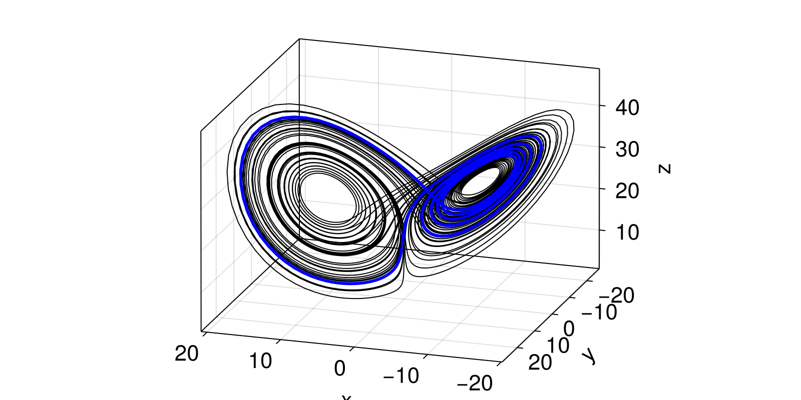

Tutorial
In this tutorial we will detect an unstable periodic orbit of the well-known Lorenz-63 dynamical system. The tutorial assumes you are familiar with DynamicalSystems.jl; go through its overarching tutorial first if not.
First we define the Lorenz-63 system itself.
using PeriodicOrbits # or `DynamicalSystems`
function lorenz63(u0=[0.0, 10.0, 0.0]; σ = 10.0, ρ = 28.0, β = 8/3)
diffeq = (abstol=1e-10, reltol=1e-10) # higher accuracy
return CoupledODEs(lorenz63_rule, u0, [σ, ρ, β]; diffeq)
end
@inbounds function lorenz63_rule(u, p, t)
du1 = p[1]*(u[2]-u[1])
du2 = u[1]*(p[2]-u[3]) - u[2]
du3 = u[1]*u[2] - p[3]*u[3]
return SVector{3}(du1, du2, du3)
end
ds = lorenz63()3-dimensional CoupledODEs
deterministic: true
discrete time: false
in-place: false
dynamic rule: lorenz63_rule
ODE solver: Tsit5
ODE kwargs: (abstol = 1.0e-10, reltol = 1.0e-10)
parameters: [10.0, 28.0, 2.6666666666666665]
time: 0.0
state: [0.0, 10.0, 0.0]
At the default parameter values the system is chaotic; it only has unstable periodic orbits.
Given a dynamical system, the main function of the package is periodic_orbit which will find unstable/stable periodic orbits and return them. To call it, we need two things:
- An initial guess.
- A periodic orbit finding algorithm.
For the initial guess Next, we give initial guess of the location of the periodic orbit and its period. The initial guess must be an instance of InitialGuess.
u0_guess = SVector(1.0, 2.0, 5.0)
T_guess = 4.2
ig = InitialGuess(u0_guess, T_guess)InitialGuess{SVector{3, Float64}, Float64}
u0: [1.0, 2.0, 5.0]
T: 4.2
Then we pick an appropriate algorithm that will detect the PO. In this case we can use any algorithm intended for continuous time dynamical systems. We choose OptimizedShooting (see the documentation for more information).
alg = OptimizedShooting(Δt=0.01, n=3)OptimizedShooting{@NamedTuple{reltol::Float64, abstol::Float64, maxiters::Int64}}(0.01, 3, (reltol = 1.0e-6, abstol = 1.0e-6, maxiters = 1000))Finally, we combine all the pieces to find the periodic orbit.
po = periodic_orbit(ds, alg, ig)
poPeriodicOrbit{3, Float64, Float64, Missing}
u0: [0.20152, 0.43088, 13.35185]
T: 4.41777
stable: missing
discrete: false
length: 99
The closed curve of the periodic orbit can be visualized using plotting library such as Makie. Here we will visualize it inside an otherwise normal trajectory of the system.
using CairoMakie
# plot trajectory
X, t = trajectory(ds, 100.0; Δt = 0.01)
fig = Figure()
ax = Axis3(fig[1,1], azimuth = 0.6pi, elevation= 0.1pi)
lines!(ax, X, color = :black, linewidth=1.0)
# over-plot the PO
u0 = po.points[1]
T = po.T
traj, t = trajectory(ds, T, u0; Δt = 0.01)
lines!(ax, traj; color = :blue, linewidth=3)
fig
To ensure that the detected period is minimal, eg. it is not a multiple of the minimal period, we can use minimal_period.
minT_po = minimal_period(ds, po)
minT_poPeriodicOrbit{3, Float64, Float64, Missing}
u0: [0.20152, 0.43088, 13.35185]
T: 4.41777
stable: missing
discrete: false
length: 100
We see that the orbit is indeed minimal; the period did not change. To check whether two periodic orbits are equivalent up to some tolerance, the function poequal can be used.
equal = poequal(po, minT_po; dthres=1e-3, Tthres=1e-3)
"Detected periodic orbit had minimal period: $(equal)""Detected periodic orbit had minimal period: true"Most algorithms do not detect the stability of a PO automatically, so you can see it is reported as missing above. To determine whether found periodic orbit is stable or unstable, we can apply the postability function.
po = postability(ds, po)
"Detected periodic orbit is $(po.stable ? "stable" : "unstable").""Detected periodic orbit is unstable."